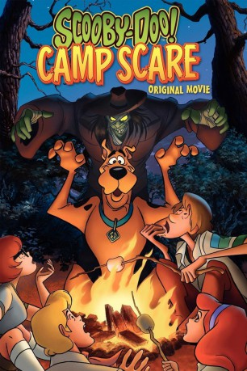

#10451 Scooby-Doo! Das Grusel-Sommercamp
Alternativ: Scooby-Doo! Camp Scare (Englischer Titel)
 
 IMDB-Wertung: 7.3 / 10
IMDB-Wertung: 7.3 / 10  Metascore: 0
Metascore: 0 
Fred, Daphne, Velma, Norville und Dogge Scooby-Doo besuchen Freds altes Feriencamp. Komisch: Das Gelände scheint verlassen. Hat der böse „Waldarbeiter“ etwa alle Kinder verjagt? Die Freunde müssen den Spuk beenden.
Jahr: 2010
Dauer: 72 Minuten
FSK:
Land: USA Studio: Warner Home VideoTonspuren: DD2.0 - ,
Untertitel:
Auflösung: 1080p (1920x1080) Größe: 2713 MB
Genre: Komödie, Abenteuer, Animation/Trick, Familie, Mystery
Regisseur: Ethan Spaulding
Drehbuch: Jed Elinoff, Scott Thomas
Soundtrack: Robert J. Kral
Darsteller:
Datei: X:\Kinder Collections\Scooby-Doo\Scooby-Doo! Das Grusel-Sommercamp (2010, FSK, 1920x1080).mkv seit 09.01.2019
Festplatte: Kinder-Filme+Trick
 Es gibt insgesamt 17 Filme in der Gruppe 'Kinder Collections\Scooby-Doo'
Es gibt insgesamt 17 Filme in der Gruppe 'Kinder Collections\Scooby-Doo'